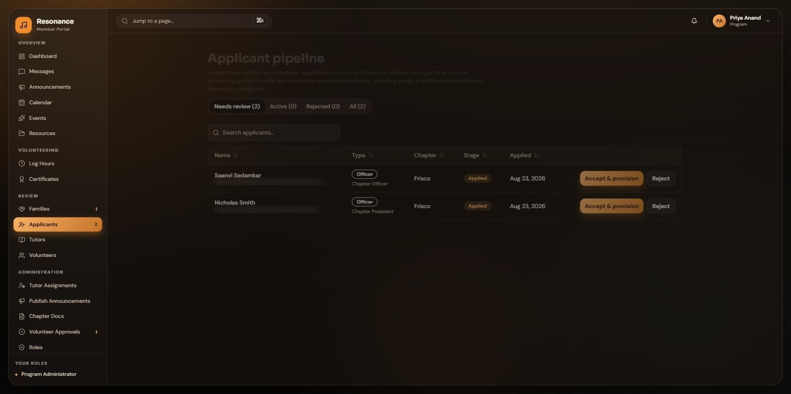
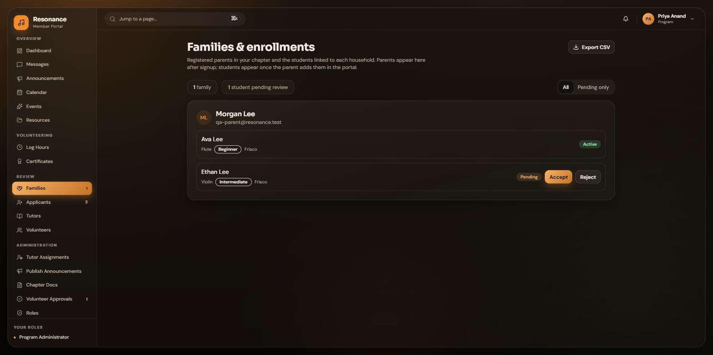
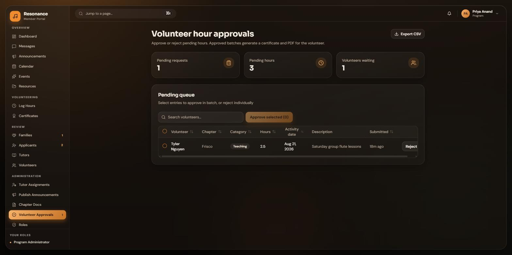
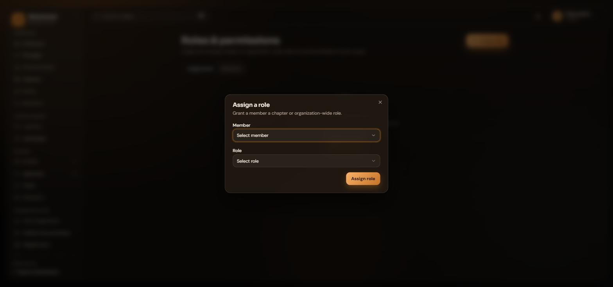

NO. RF-2026-PA
Portal Guide
The Program Administrator Guide
Running chapter operations across the whole organization: applicants, families, tutors, events, and volunteer hours.
Program Administrators · theresonancefoundation.org
Running chapter operations across the whole organization: applicants, families, tutors, events, and volunteer hours.
Program administrators are the operations engine of the Foundation. Where a chapter president runs one chapter, you keep every chapter running.
Your sidebar has three working sections. Review holds the people pipeline: Families, Applicants, Tutors, and Volunteers. Administration holds the machinery: Tutor Assignments, Publish Announcements, Chapter Docs, Volunteer Approvals, and Roles. The small number badges are pending work waiting for you; when a badge clears, that queue is empty.
Donations, corporate level audit records, and every corporate appointment belong to the Board. You cannot appoint or remove chapter presidents, corporate officers, or board members, you cannot remove any officer, and you cannot approve organization level volunteer hours. Everything else across the chapters is yours.
New people arrive through two doors: staff applications and family signups. Both wait for your review.
The Applicants page lists tutor, officer, and volunteer applications from every chapter, filtered by stage. Open one to see the whole application, then choose Accept & provision or Reject. Accepting grants the role immediately and emails the applicant the good news. Try to answer every application within a few days.

Families shows every registered household and their students. New students start pending; approving one unlocks lesson requests for that family. The Export CSV button gives you the full roster as a spreadsheet whenever you need it.

Tutors and chapter members log service hours. You are one of the people who turns those pending entries into signed certificates.

You approve chapter level hours in any chapter. Organization level (corporate) hours are reviewed by the Board only, so they never appear in your queue. You also cannot approve hours you logged yourself.
The Roles page is where members get their access. Pick a member, pick a role, pick a chapter when the role needs one, and assign.

You can grant parent, tutor, volunteer, and chapter officer roles, and you can remove parents, tutors, and volunteers. The dialog never shows you a role you cannot grant, so there is no way to overstep by accident. Every change is written to the audit log.
| You can | You cannot |
|---|---|
| Manage applicants, families, tutors, and assignments in every chapter | View or record donations (board only) |
| Approve chapter level volunteer hours anywhere | Approve corporate level hours (board only) |
| Grant parent, tutor, volunteer, and chapter officer roles | Appoint presidents, corporate officers, or board members |
| Remove parents, tutors, and volunteers | Remove any officer of any kind (board only) |
| Publish announcements, manage docs, events, and exports | See corporate level audit entries |
Questions or something broken? Email administrator@theresonancefoundation.org and a real person will get back to you.